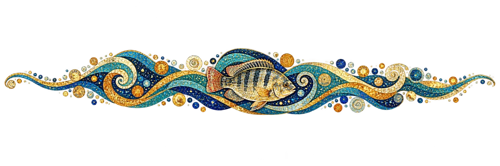
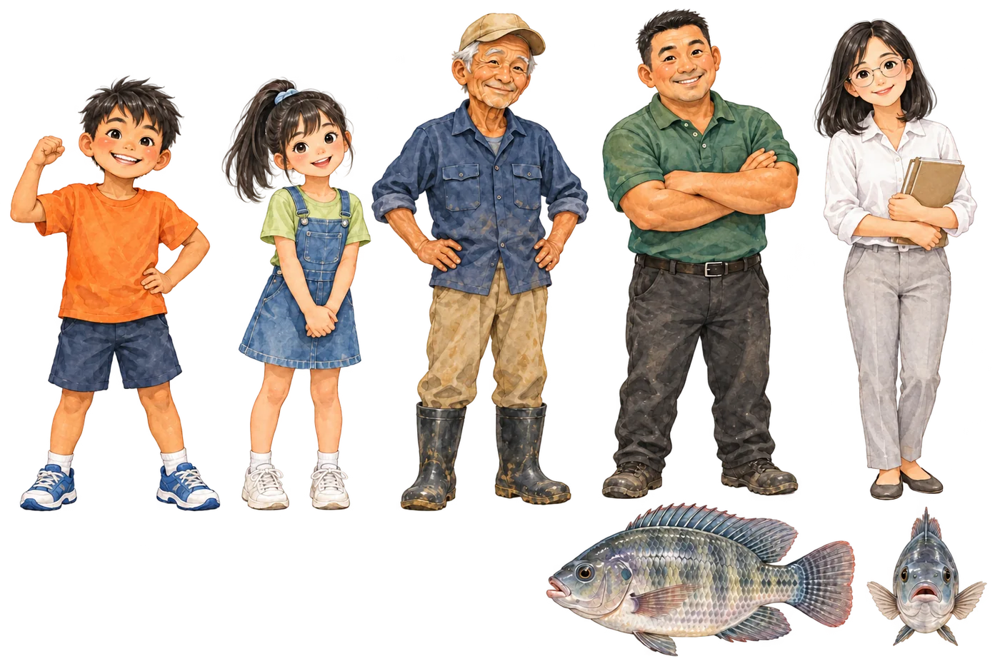

繪本動畫
18 幅跨頁插圖用 Google Flow 變成會動的畫面，再配上旁白與角色配音。點右邊的章節，可以直接跳到想看的那一幕。
會動的繪本
每一頁的插圖都會輕輕動起來。按「朗讀這一頁」聽故事，正在念的句子會亮起來；勾選「自動翻頁」就能一路聽到最後。
登場角色

- 阿土住在魚塭旁的小男孩，最愛跟著阿公巡魚塭，什麼都想問個明白。
- 小晴阿土的同學，細心又有創意，做出全班第一個「真的有鯛魚的鯛魚燒」。
- 阿公養了一輩子魚的魚塭達人，寒流夜裡也守著魚塭。
- 阿忠叔叔養殖達人，到食農教室教大家「三清」和全魚利用。
- 老師帶大家下廚、上營養午餐課，提醒大家珍惜每一口食物。
- 鯛鯛魚塭裡最壯的台灣鯛，阿土口中的「超級魚戰士」。
製作方式
從故事文字到動畫，每一步都由教學團隊規劃並逐一檢查。
1
原創故事
教學團隊依課程內容撰寫 18 跨頁故事：魚塭、吳郭魚的由來、三清、惜食、全魚利用與科技養殖。
2
繪本插圖
以 ChatGPT 依故事與統一的角色設定逐頁協作繪製水彩風插圖，再人工檢查角色與內容是否一致。
3
Flow 動畫
用 Google Flow（Veo 3.1）把每一頁插圖同時設為開始與結束畫面，生成 8 秒動畫，可無縫循環；逐支抽幀檢查畫面。
4
配音與字幕
多角色 AI 語音依原文逐句配音，字幕標示說話角色；再用語音辨識比對配音與原文，確認沒有念錯。